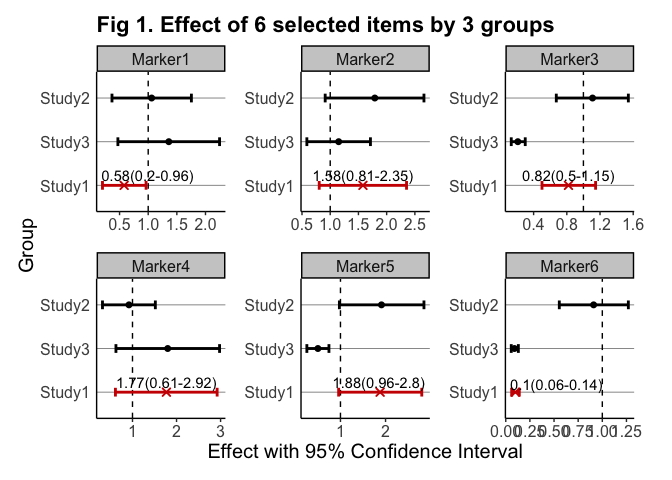
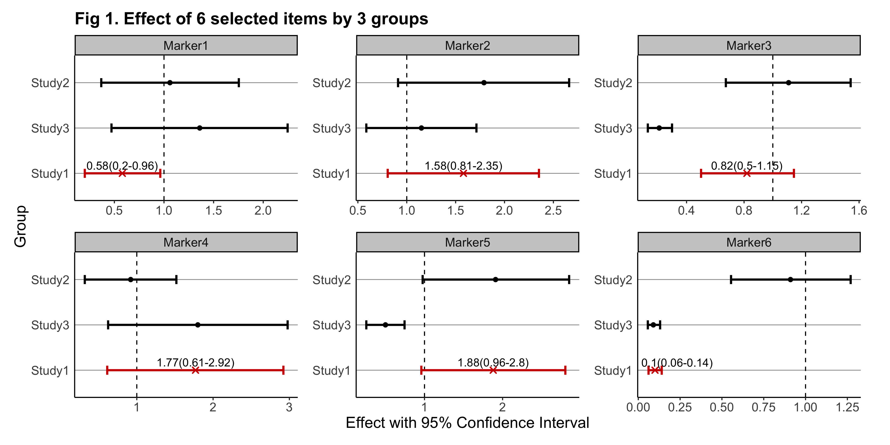

The goal of gwasforest is to extract and reform data from GWAS results, and then make a single integrated forest plot containing multiple windows of which each shows the result of individual SNPs (or other items of interest).
The official release version of gwasforest can be installed from CRAN with:
utils::install.packages("gwasforest")The development version of gwasforest can be installed from GitHub with:
devtools::install_github("yilixu/gwasforest", ref = "main")
library(gwasforest)
set.seed(123)
# generate example data
tempValue = runif(n = 18, min = 0.01, max = 2)
tempStdErr = tempValue / rep(3:5, times = 6)
eg_customFilename = data.frame(paste0("Marker", 1:6), tempValue[1:6], tempStdErr[1:6], tempValue[7:12], tempStdErr[7:12], tempValue[13:18], tempStdErr[13:18], stringsAsFactors = FALSE)
colnames(eg_customFilename) = c("MarkerName", paste0(rep("Study", times = 6), rep(1:3, each = 2), rep(c("__Value", "__StdErr"), times = 3)))
rm(tempValue, tempStdErr)
# run gwasforest function
eg_returnList = gwasforest(eg_customFilename, stdColnames = TRUE, valueFormat = "Effect", metaStudy = "Study1", colorMode = "duo")
#> [1] "Column names are in the same format as instruction example"
#> [1] "Loading user-provided values"
#> [1] "Start calculating Confidence Interval (non-exponential)"
#> [1] "Based on user's choice, GWAS results output file will not be generated"
#> [1] "All studies except meta study will be set in alphabetical order from top to bottom on the forest plot"
#> Registered S3 methods overwritten by 'ggplot2':
#> method from
#> [.quosures rlang
#> c.quosures rlang
#> print.quosures rlang
#> [1] "Based on user's choice, GWAS forest plot file will not be generated"
#> [1] "Run completed, thank you for using gwasforest"
# generate example data
tempValue = runif(n = 18, min = 0.01, max = 2)
tempStdErr = tempValue / rep(3:5, times = 6)
eg_customFilename = data.frame(paste0("Marker", 1:6), tempValue[1:6], tempStdErr[1:6], tempValue[7:12], tempStdErr[7:12], tempValue[13:18], tempStdErr[13:18], stringsAsFactors = FALSE)
colnames(eg_customFilename) = c("MarkerName", paste0(rep("Study", times = 6), rep(1:3, each = 2), sample(LETTERS, 6)))
rm(tempValue, tempStdErr)
eg_customFilename_studyName = data.frame("studyName" = paste0("Study", 1:3), stringsAsFactors = FALSE)
# run gwasforest function
eg_returnList = gwasforest(eg_customFilename, customFilename_studyName = eg_customFilename_studyName, stdColnames = FALSE, customColnames = c("Value", "StdErr"), valueFormat = "Effect", metaStudy = "Study1", colorMode = "duo")
# extract results table
eg_customFilename_results = eg_returnList[[1]]
library(ggplot2)
# render plot, see additional NOTES below
plot(eg_returnList[[2]])
#> Warning: Removed 12 rows containing missing values (geom_text_repel).
